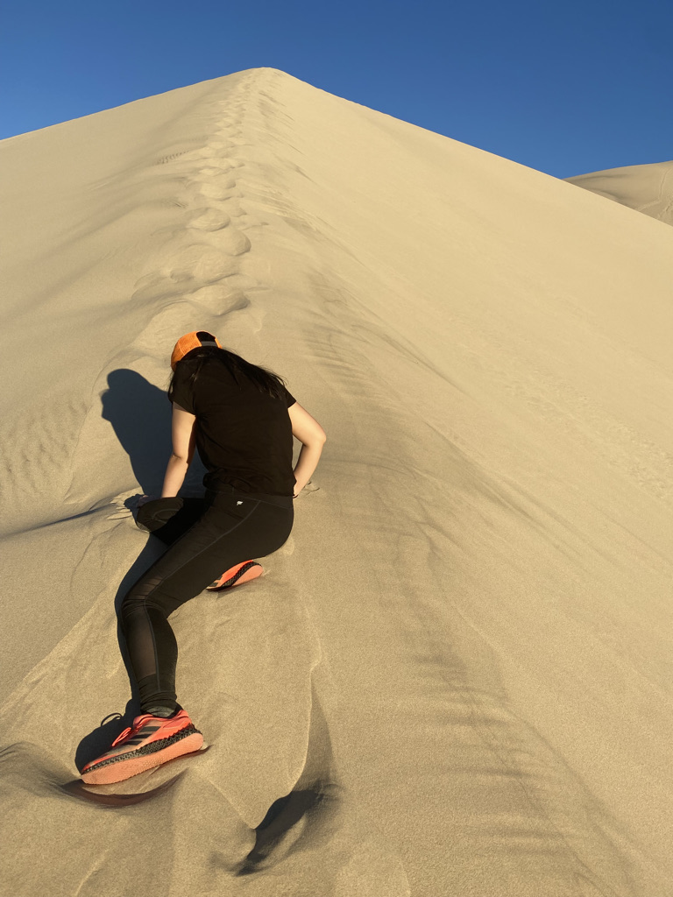

About Me
Over the span of more than 5+ years in the industry, my journey in the realm of Product Design and UX/UI has been an incredible odyssey, filled with diverse experiences and invaluable lessons. It's been a thrilling ride, one where I've had the privilege to immerse myself in a myriad of industries, each presenting its unique set of challenges and opportunities. I've worked in indsutries from finance to big data, from the intricacies of insurance to developer-centric platforms. I've embraced every twist and turn with enthusiasm.
As I've navigated through this multifaceted landscape, both web and mobile platforms have served as my canvas, allowing me to weave together functionality and aesthetics in a harmonious blend. With each project, I've endeavored to infuse my designs with a touch of my own personality, creating experiences that not only delight but also resonate deeply with users on a practical level. Whether it's crafting intuitive interfaces for analytics tools, designing sleek dashboards for data visualization, or streamlining complex business processes laden with heavy data, I've approached every challenge with a sense of excitement and a pragmatic mindset. In the realm of analytics, I've found myself at home, relishing the opportunity to dive deep into data landscapes and transform them into meaningful insights that drive informed decision-making. Dashboards have become my playground, where I get to orchestrate the symphony of data visualization, ensuring that every element serves a purpose and contributes to a cohesive narrative. And in the realm of data-heavy business processes, I've embraced the intricacies with open arms, leveraging my expertise to streamline workflows and enhance efficiency, all while keeping the user experience at the forefront of my mind.
Hobbies
 Immersing myself in the wonders of nature is where I find my greatest joy. Whether it's hiking through rugged terrains or exploring the serene beauty of national parks, the great outdoors is my sanctuary. Alongside my passion for adventure, I also devote my time to wildlife and animal rescue efforts, finding fulfillment in making a positive impact on the lives of our furry companions. My 15-year-old cat, Piggy, has been my faithful companion throughout my adult life, reminding me daily of the importance of compassion and care.
When I'm not traversing the trails or planning my next wilderness escapade, I dedicate myself to wildlife and animal rescue. I find immense fulfillment in lending a helping hand to creatures in need, whether it's rehabilitating injured wildlife or providing a loving home for abandoned pets. My efforts extend to caring for my beloved 15-year-old cat, Piggy, who has been a constant source of comfort and companionship over the years. Through these endeavors, I strive to make a positive impact on the lives of animals and contribute to creating a more compassionate world.
In addition to my passion for wildlife rescue, I indulge in the thrill of exploring national parks across the globe. From the rugged beauty of Death Valley to the majestic landscapes of Yellowstone and Grand Teton, I've been fortunate to witness the breathtaking wonders of nature firsthand. As I eagerly anticipate future adventures to Banff, Glacier, and beyond, my wanderlust knows no bounds. Dreaming of exploring the wilderness of New Zealand, Australia, and Patagonia fills me with excitement and anticipation, fueling my desire to embark on new journeys and discover the beauty that awaits beyond the beaten path.
Comments
If you're intrigued by the prospect of collaboration or wish to explore potential opportunities down the road, I warmly invite you to reach out to me via LinkedIn or through email. Whether it's a current project you're eager to dive into or a future endeavor you're contemplating, I'm enthusiastic about discussing possibilities and brainstorming innovative ideas together.Your input and perspective are invaluable, and I'm excited to connect with individuals who share a passion for creativity, growth, and meaningful impact. Don't hesitate to drop a comment in this section as well if that's more convenient for you. Let's embark on a journey of collaboration and mutual success, where our combined efforts can lead to remarkable outcomes and memorable achievements. Looking forward to connecting and exploring the endless possibilities that lie ahead!